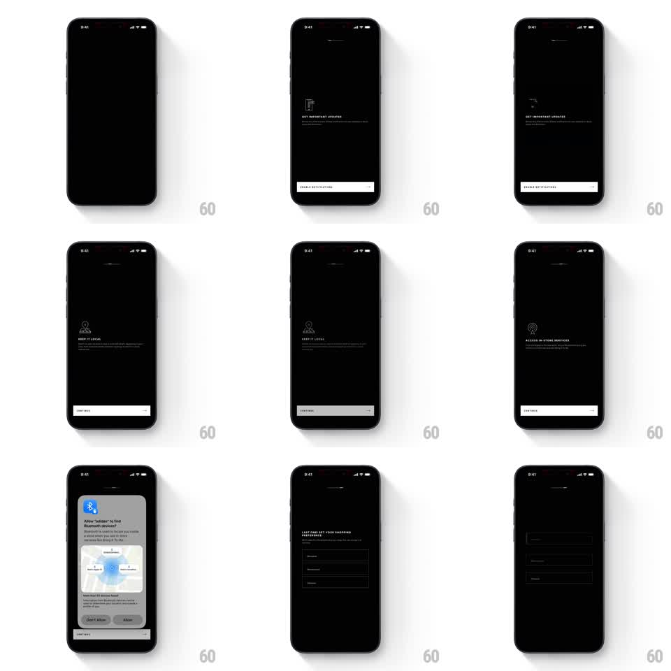

Media
Frame-by-frame

Rebuild this interaction 1:1: Adidas' stepped onboarding - a thin progress line at the top advances through permission steps (notifications, location, bluetooth) and a preference picker, each step a black screen with one icon, one ask, and one button.

Rebuild this interaction 1:1: Adidas' stepped onboarding - a thin progress line at the top advances through permission steps (notifications, location, bluetooth) and a preference picker, each step a black screen with one icon, one ask, and one button.
## Integration
Integration: stack-agnostic spec - springs given as stiffness/damping, timed motions as duration + curve; map every value to your framework and animation library of choice.
## Scene
Adidas onboarding, all black: a thin segmented progress line at the top; per step - a small line icon, an uppercase headline ("GET IMPORTANT UPDATES", "KEEP IT LOCAL", "ACCESS IN-STORE SERVICES", "LAST ONE! SET YOUR SHOPPING PREFERENCES"), small subcopy, and a bottom button ("ENABLE NOTIFICATIONS" / "CONTINUE"), ending in outlined WOMEN / MEN / KIDS / (more) preference buttons.
## Motion spec
Pattern: stepped permission flow with advancing progress line.
- Step transitions crossfade: the icon, headline, and copy fade out together (180ms), the next step fades in with a slight rise (translateY 12 -> 0, 280ms).
- The progress line extends to the next segment as the new step lands (300ms, ease-out) - the bar leads, content follows.
- The bottom button fades up last on each step (100ms after the copy).
- The bluetooth step's CONTINUE raises the system permission dialog: the screen dims, the dialog scales 0.92 -> 1 with fade (200ms); either answer dismisses (150ms) and the flow advances.
- On the preferences step, tapping an option fills it white (150ms) and the flow can end on a final CONTINUE.
## Calibration
- One idea per screen - generous emptiness is the design; never stack steps.
- Icons are thin line work, same stroke weight across all steps.
## Reduced motion
Steps crossfade (250ms); progress line jumps.
## Don't miss
- The progress line never moves backward - declining a permission still advances.
- The system dialog is real chrome: keep the underlying screen visible but dimmed.